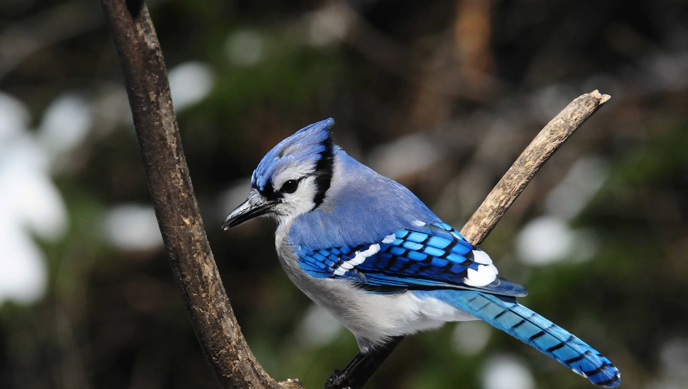
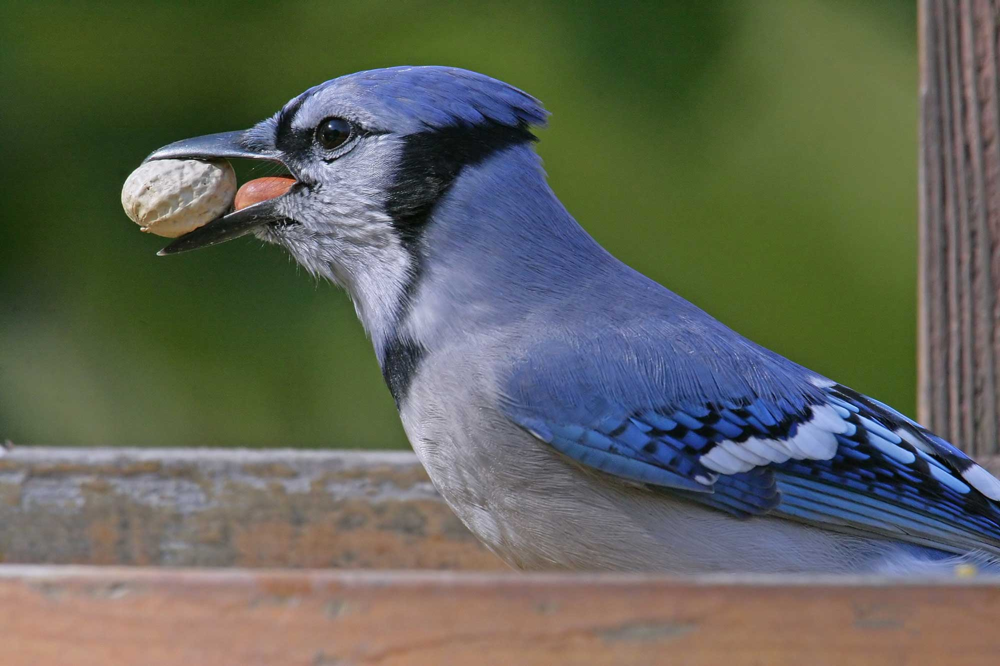
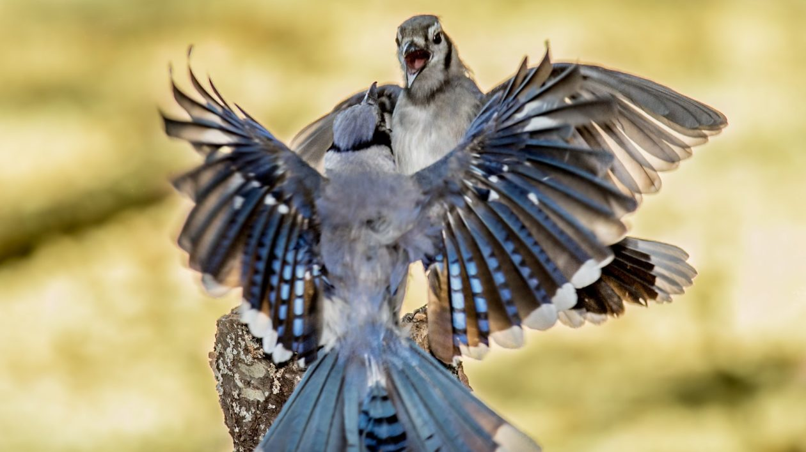

about Blue jay

Male and female blue jays have similar coloration. The blue jay has black eyes and legs and a black bill. The bird has a white face with blue crest, back, wings, and tail. A U-shaped collar of black feathers runs around the neck to the sides of the head. Wing and tail feathers are barred with black, light blue, and white. As with peacocks, blue jay feathers are actually brown, but appear blue because of light interference from the feather structure. If the feather is crushed, the blue color disappears.
Adult males are slightly larger than females. On average, a blue jay is a medium-size bird measuring 9 to 12 inches in length and weighing between 2.5 and 3.5 ounces.
Blue jays live from southern Canada south into Florida and northern Texas. They are found from the East Coast west to the Rocky Mountains. In the western portion of their range, blue jays sometimes hybridize with Steller's jay. Blue jays prefer a forested habitat, but they are highly adaptable. In deforested regions, they continue to thrive in residential areas.
Blue jays are omnivorous birds. While they will eat small invertebrates, pet food, meat, and sometimes other bird nestlings and eggs, they usually use their strong bills to crack acorns and other nuts. They also eat seeds, berries, and grains. About 75% of a jay's diet consists of vegetable matter. Sometimes blue jays cache their food.
Blue jays are monogamous birds that build nests and rear young together. The birds typically mate between mid-April and July and produce one clutch of eggs per year. Jays build a cup-shaped nest of twigs, feathers, plant matter, and sometimes mud. Near human habitation, they may incorporate cloth, string, and paper. The female lays between 3 and 6 gray- or brown-speckled eggs. The eggs may be buff, pale green, or blue. Both parents may incubate the eggs, but mainly the female broods the eggs while the male brings her food. The eggs hatch after about 16 to 18 days. Both parents feed the young until they fledge, which occurs between 17 and 21 days after hatching. Captive blue jays may live over 26 years. In the wild, they usually live around 7 years.
The IUCN categorizes the blue jay's conservation status as "least concern." While deforestation in eastern North America temporarily decreased the species' population, blue jays have adapted to urban habitats. Their population has remained stable over the past 40 years.